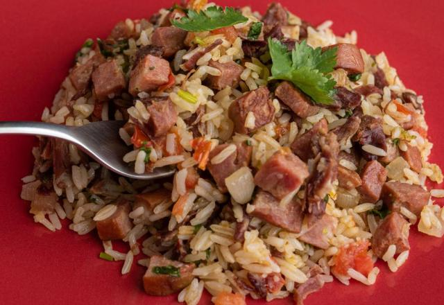

Delícias do Campo

Arroz Carreteiro
Receita típica feita com arroz, carne de sol e legumes frescos.
Ver Receita CompletaReceita típica feita com arroz, carne de sol e legumes frescos.
Ver Receita Completa